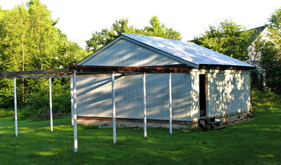
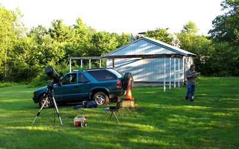
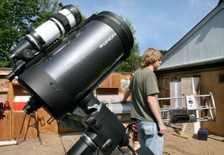
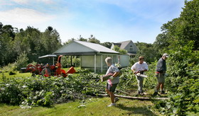
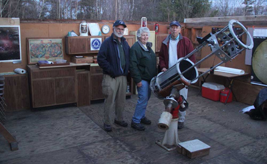

The Sullivan Observatory
The club owns and maintains the Sullivan Observatory which is located just northeast of the city of Keene. The observatory was constructed back in the fall of 1970.

There are two permanent telescopes kept at the observatory. They are the
12 1/2" Newtonian reflector with an equatorial mount. Kingsburry Corporation
in Keene donated the mirror for the 12 1/2" and club members constructed
the body on the equatorial mount. The 15" f/4.5 Obsession reflector has
a Dobsonian mount and is portable for off-site events.
We have a collection of photographs from the construction of the observatory in 1970.
And here is a collection of inside photos from May 2012.
And here is a collection of photos from our September 2012 work session.
Specific directions to the Observatory may be obtained by contacting Bob Taylor, club Secretary.
| At a recent business meeting, Past President Keith Goodale arrived early and set up his new telescope for the members to use. |
 |
| In the photo on the left below, Chris Chase, of West Swanzey, stands next to a 12 and one half inch Newtonian reflector telescope designed and built by the astronomy club. He was replacing the finder scope on the telescope at the club's Sullivan observatory. In the foreground is a 9 and one quarter inch Schmidt-Cassegrain reflector telescope. On the right, clearing trees and opening up the view at the Sullivan Observatory, from left, astronomy club vice-president Phinie Faux, club president Jim Fox, and club webmaster Jim Faux. The observatory is behind them.[Both photos were taken by Michael Moore of the Keene Sentinel Staff] |
|  |  |
| The left photo below was taken at a 2014 star party at the Keene observatory with members from SoVerA, KAA, and the KSC CALL program. The photo on the right is is a shot of the inside the observatory with members Jim Faux, Phinie Faux, and Bob Taylor. Both photos were taken by Claudio Veliz, SoVerA/KAA. |
 |
 |
Current Conditions - Keene, NH

Sun and Moon - Keene, NH

Clear Sky Chart - Keene, NH

Clear Outside - Keene, NH

{kind=link}
{kind=link}
{kind=link}
Tonight's Sky - Keene, NH

Time
Keene, NH
UTC